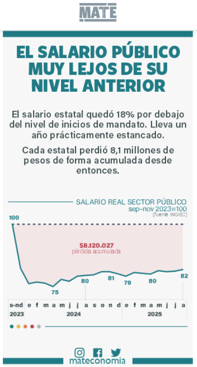

ATE ORSNA
Esta es la página de la Junta Interna de ATE en el ORSNA. Un espacio para organizar, informar y defender nuestros derechos como trabajadoras y trabajadores del Organismo.
Credencial sindical
Obtené tu credencial digital ATE ORSNA
Accedé a tu identificación digital de manera rápida desde cualquier dispositivo.
Credencial Digital
¿Cuánto poder adquisitivo perdiste desde diciembre de 2015?
Ingresá tu salario actual y te mostramos cuánto perdimos por la falta de actualización paritaria

Informe de referencia
Para contextualizar la pérdida de poder adquisitivo frente a la inflación, consultá el informe de MATE Economía
Contacto
Datos de contacto
- Correo general: ateorsna@gmail.com
- Redes: IG @ateorsna
- Presencial: Oficina de la Junta Interna en el ORSNA (6to piso T4 Aeroparque)
Esta es una versión inicial de prueba.